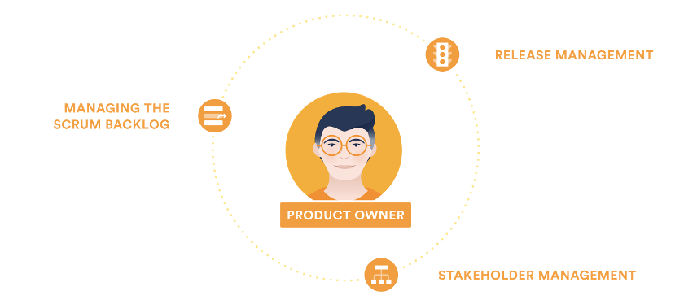

Agile Methodology
Contents
Agile Methodology¶
In this subject, you will form teams and operate according to the agile methodology. This chapter will help familiarise students with the agile framework for project management and software development.
Software Development Lifecycles (SDLCs)¶
Software development lifecycles (SDLCs) refer to a process for planning, developing, testing, and deploying a software system. There are two main types of SDLCs: formal and Agile.
SDLC |
Type |
|---|---|
Formal |
|
Formal |
|
Formal |
|
Agile |
|
Agile |
|
Agile |
You do not need to learn these SDLC methodologies - you will only make use of Scrum. Links have been provided to the others in case you want to learn more.
Agile was formed after teams were frustrated by the rigidity of formal methods, and their inability to adapt to change easily without exceeding cost and time constraints. For example, in Waterfall, teams complete all the requirements work before moving to design and subsequently development. If the requirements changed during the development phase, the team would need to start over, costing significant time and money, something that is not feasible in many situations.
Agile Manifesto¶
Agile, much like its name, focuses on being able to adapt to change rapidly through developing software incrementally. The agile manifesto explains the core values and principles that are the basis of Agile:
Individuals and interactions over processes and tools.
Working software over comprehensive documentation.
Customer collaboration over contract negotiation.
Responding to change over following a plan.
Scrum Framework¶
For this subject, you will work in agile teams following the Scrum framework.
What is Scrum?¶
Scrum is a framework used to implement an Agile mindset. It focuses on ensuring teams work together, embodying the values from the agile manifesto. Scrum is based on teams working iteratively, in time-boxed sprints (typically 2-4 weeks), with a predetermined set of tasks. During sprint planning, the team decides which tasks to work on during the upcoming sprint, to ensure they maximise value to their client. If requirements change, the teams can easily adapt as sprints are short, and the subsequent sprints planning can re-prioritise the changed requirements.
Sprints¶
Sprints are a short time-boxed period in which a scrum team endeavours to complete a set amount of work. The duration of sprints can be determined by teams, but typically duration is between 2-4 weeks. As sprints have several ceremonies that must be completed, teams should determine what works best for them.
Scrum Roles¶
Scrum teams have three key roles: product owner, scrum master, and development team members
Product Owner¶
The product owner ensures the team delivers the most value to the client. They have a strong understanding of the project, which is used to prioritise user stories in upcoming sprints.

Source: Atlassian
Product owners are required to maintain close ties with the client and seek their validation and input. They are also the conduit for communication with the client - all emails, meeting invites, etc. from the team should be guided through the product owners to reach the client.
Scrum Master¶
The scrum master is responsible for ensuring that the Scrum framework is followed. Unlike a manager, the scrum master coaches the team rather than leading them - scrum masters are servant leaders. They have no authority to act as a manager in the traditional sense of being able to allocate tasks. Instead, it is their responsibility to ensure that they oversee how the project is tracking, and work to unblock developers to continue meeting objectives.

Source: Atlassian
Development Team¶
The development team refers to the team members who are implementing the system. In your project, all team members must be a part of the development team (including the Scrum master and product owner).

Source: Atlassian
There are several other roles that teams may benefit from using. Please note that these are not Scrum roles:
Quality Assurance/Testing lead: Monitors testing other initiatives to ensure the system is built to a high quality. Often, they are responsible for creating a testing plan and ensuring the testing objectives are met
Frontend lead: Oversees the frontend development of the project and is typically responsible for setting up and configuring the frontend codebase. Additionally, plays a key role in any decision-making about frontend architecture.
Backend lead: Oversees the backend development of the project and is typically responsible for setting up and configuring the backend codebase. Additionally, plays a key role in any decision-making about backend architecture.
Scrum Artefacts¶
Managing work in a scrum team involves the use of two artefacts:
Product backlog: Primary list of work that needs to be done which is maintained by the product owner.
Sprint backlog: The list of work that needs to be completed in the current sprint.
Scrum Ceremonies¶
Scrum ceremonies refer to a set of meetings that are used to manage the development of a project. These ceremonies are important in facilitating team communication and reducing the feedback loop. The table below shows the key details of the Scrum ceremonies.

Source: Atlassian
Ceremony |
When |
Who |
Preparation |
Duration |
Process |
Outcome |
|---|---|---|---|---|---|---|
Sprint planning |
Start of each sprint |
Development team |
Product owner should have a prioritised product backlog |
1 hour per week of sprint. E.g., 2-week sprints have a 2-hour session |
1. Product owner presents product backlog |
Populated sprint backlog in the team’s task tracking tool. |
Stand-up |
Weekly |
Development team and supervisor |
None |
<15 minutes |
Each team member says what they have done, what they will be working on and any blockers. |
|
Sprint review |
End of each sprint |
Development team and client |
None |
1 hour |
Product owner presents the work completed in previous sprint and seeks feedback. |
Populated sprint review page in the team’s document repository. |
Sprint retrospective |
End of each sprint |
Development team |
None |
20 mins |
Scrum master facilitates session to establish what the team thought went well, what didn’t work and what actions the team could do to improve. |
Populated retrospective page in the team’s document repository. |
We have outlined how the scrum framework can assist teams in following the agile manifesto. Now we will discuss how development requirements can be represented.
Representing Requirements the Agile Way¶
Product requirements are a way of defining a product’s purpose, features, functionality, and behaviour. It serves as a common place to develop and guide understanding for the technical team (the developers) and the client to help build the product.
These requirements are then represented as initiatives, epics, tasks, and subtasks.

Source: Atlassian
Initiatives¶
In this subject you will only have one concurrent project, so the project will count as the initiative. In a larger business where there might be 2 or more applications under development simultaneously, there would be 2 or more initiatives to cover each development.
Epics¶
An epic refers to a large body of work that can be broken down into user stories. Epics cluster user stories that have a similar higher-level objective.
Epics are a useful way to organise and create a hierarchy out of the work. The goal of breaking down epics into user stories is to reduce the amount of work required for the project into small, incremental tasks so that value is delivered throughout the life of the project through the completion of these smaller tasks. For client-based projects, this means that you can deliver incremental progress and demonstrate value much easier than if the tasks remained large pieces of work.
Epics generally have a duration greater than one sprint. As the team progresses through the project and develops a better understanding of the project and its requirements, user stories will naturally be added and removed from an epic. This is exactly what we want in an epic following agile methodology: a flexible scope that changes based on client feedback and team progress.
User Stories¶
A user story is the smallest unit of work in the agile framework. A user story may have one or many subtasks, but user stories are considered the smallest piece of work that constitutes an end goal from a user’s perspective. A user story is an end goal, not a feature, expressed from the perspective of the software user.
As discussed, user stories refer to a way of writing requirements from the perspective of the end-user. By doing this, requirements follow the agile methodology and are focused on the value delivered to the end-user.
A key component of agile software development is putting people first, and a user story puts end-users at the centre of the conversation. User stories use non-technical language to provide context for the development team. From reading a user story, the developer doing the work required for that user story knows what they are building, why they are building, for whom they are building it, and what value it creates.
How to Write a User Story¶
When first created, user stories consist of only one sentence in simple language meant to outline the desired outcome - they don’t go into detail. User stories are expanded upon later and more details are added to the user story, as agreed by the team, as work begins on the issue.
User stories are written to be non-technical following the format:
As a [role], I want to [goal], so that I can [benefit].
As an example, a company like Facebook might create a user story for new
functionality for their website with the following format:
As an individual user, I want to upload a photo to my profile picture,
so that people who search for my name can see a photo of me.
Story Points: User Story Estimation Metric¶
As user stories reflect requirements that a developer must implement, they should have a corresponding estimate for the effort required to develop the functionality. This is necessary for time-boxed projects to estimate the time to delivery for new functionality. However, estimations in the Agile world are not based on time, but instead use story points.
Story points estimate a task by considering the amount of work that needs to be done, the difficulty of the task and any potential risk or uncertainty involved. This is a better estimate as using the time taken to complete a task can vary from developer to developer depending on their level of experience.
Various scales can be used for story points. Two common methods used are:
Fibonacci sequence (1, 2, 3, 5, 8…)
T-shirt sizing (XS, S, M, L, XL)
Regardless of which estimation technique your team chooses to use, you should have the estimation technique documented in your team’s document repository.
Estimation Process¶
The estimation process occurs during sprint planning. There are several ways to estimate the story points of a user story - we will look at planning poker today:
All members are given cards that have a story point value. If using Fibonacci sequence, would have cards for 0, 1, 2, 3, 5, 8, 13…
Product owner reads out a user story and clarifies details if anyone has any questions.
Team discusses how they will handle the task and what skills are required to understand the approach.
Each member picks a card with a story point value they feel matches the user story just discussed, and places it face-down.
Once all team members have chosen a card, the team turns over all the cards and discusses.
Once the team reaches a consensus on the user story’s estimate, the product owner notes down the value.
Repeat until all user stories product owner has prepared are complete.
The estimates should be added to your chosen task tracking tool.
Extra Resources
Link |
Description |
|---|---|
A free tool that gamifies the process. |
User Story Prioritisation¶
To deliver greater value to your client, you will want to invest your efforts in tasks that are of importance first. The importance of tasks is decided in discussions with the client (it is not up to the development team to decide priority). One method of displaying the priority of a task is the MoSCoW task prioritisation method. Priorities are broken down into different levels of priority:
Must have: features that must be delivered or the software will not create the expected value for the client;
Should have: features that have significant value to the client and should be delivered, but not considered crucial;
Could have: features that the client considers nice to have but will not have a material impact to value, if not delivered; and
Won’t have: out-of-scope features; useful as next steps for your project as potential improvements for future releases.
Extra Resources
Link |
Description |
|---|---|
Further discussion of the MoSCoW method. |
|
Comprehensive Scrum guide. |
|
Details on running your sprint planning meeting. |
Once written, these stories should be documented centrally in the team’s document repository: